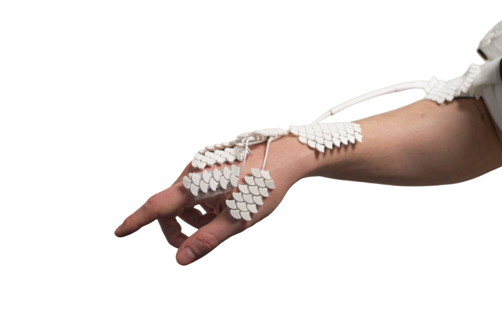
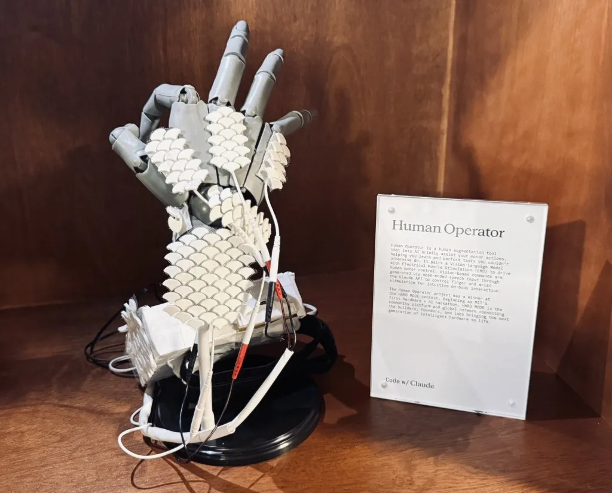

AI stimulates the wrist to wave

AI drives fingers in sequence to play a melody

AI forms an OK sign through targeted stimulation
MIT Hardware × AI Hackathon — Hard Mode Winner
"We gave AI a body, your body."
Human Operator is a human augmentation tool that allows AI to briefly take control of your body to help you learn or do things you cannot do.

Human Operator was inspired by research and systems from the Human Computer Integration Lab at UChicago on neuromuscular interfaces and electrode placement optimization.
AI stimulates the wrist to wave
AI drives fingers in sequence to play a melody
AI forms an OK sign through targeted stimulation
Human Operator is a wearable augmentation system that actively moves your body based off of AI commands. A pair of camera glasses feeds live video to a vision-language model (VLM) while you speak a command like “play a tune.” The model interprets what it sees, plans a sequence of motor actions, and dispatches those commands to hardware that stimulates the muscles controlling your fingers and wrist.
The goal is not to replace your agency, but to offer brief, guided physical assistance, a step toward on-body intelligence where AI output is movement, not just text.
I built the hardware and did electrode placement for the system: wiring the relay board, Arduino firmware integration, and the EMS stimulator path that turns software commands into muscle contractions.
Electrode placement was the other critical piece. EMS only works when current passes through the right muscle groups. Drawing on back-of-hand actuation research from the Human Computer Integration Lab at UChicago, I adjusted electrode layout and routing so stimulation felt targeted without blocking palmar dexterity. The white scale-like patches visible on the wearable are covering the electrodes placed.
I also ran calibration to find appropiate amplitude, frequency, and pulse-width ranges per channel before we let the AI take over.
Human Operator is a prototype. It is not a medical device or a consumer product. EMS can be dangerous if misused and requires calibration, caution, and informed consent.
20M+ Views
Funny enough, the project did go viral across Twitter/X, Instagram, Reddit, Youtube, 小红书 (RedNote) and etc., accumulating ~20 million views (if not more) across all sites.
Very interesting discussions were sparked about autonomy, AI, and the future of human computer interaction.
Some of the more viral posts (excluding quoted reposts and death threats lol) can be seen here:
Human Operator was showcased at Anthropic's Code w/ Claude Conference. Anthropic kindly flew us out to attend!

Exhibit display at the Code w/ Claude Conference